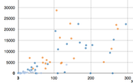
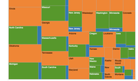
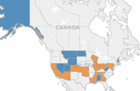

The Affordable Care Act (ACA) is one of the most significan changes in the health care system of the United States. After the judgement of the Supreme Court, state governments are free to chose to either apply ACA or not in their respective states.
View this scatter plot that groups agencies by their number of staff and expenditures for FY2011.

View this chart that groups agencies by their expenditures from FY2007 to FY2011.

View this map that shows the status of order of selection for different agencies.

This interactive visualization provides a comparative analysis of different state agencies in terms of their total expenditure and their staff strength. Agencies are divided into, 'general', 'blind' and 'combined' categories. States are broadly divided into two categories, where one type has combined agencies which cater to population with both general disabilities and also people with visual impairment. Other states have two different agencies to cater these two different segment of people with disabilities.
Many states work under Order of Selection (OOS) for providing their services. The OOS provision is used for prioritizing and providing services to individuals with the most significant disabilities when the State VR agency cannot serve all eligible individuals with disabilities under Title I of the Rehabilitation Act.
There is wide variation in the amount of money that state VR agencies expend. That expenditure is based on the number of people the agency is serving, staff, services provided, programs, etc. The following chart groups states by their expenditure. One can see the dollar value that each state expended in a given year between 2007-2011 by hovering over a particular agency. Each agency is represented by a block sized proportionally to the money that they spend in any given year.
The Affordable Care Act (ACA) is one of the most significan changes in the health care system of the United States. After the judgement of the Supreme Court, state governments are free to chose to either apply ACA or not in their respective states. The map in this post shows the current status of the state on whether they are accepting ACA or not. We will be updating this post as and when states change their stance. To explore the map, please hover over the state to know its status. Darker shades of same color represents higher population.
We offer access to full datasets from the ICI as well as accompanying data dictionaries so you can make full use of the raw data for your own analyses. We also offer PDFs of materials we have created using data from the ICI and RSA. Please check back often as we are continually updating and adding resources to this page.